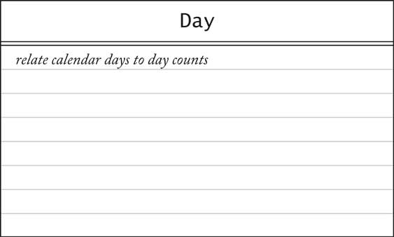
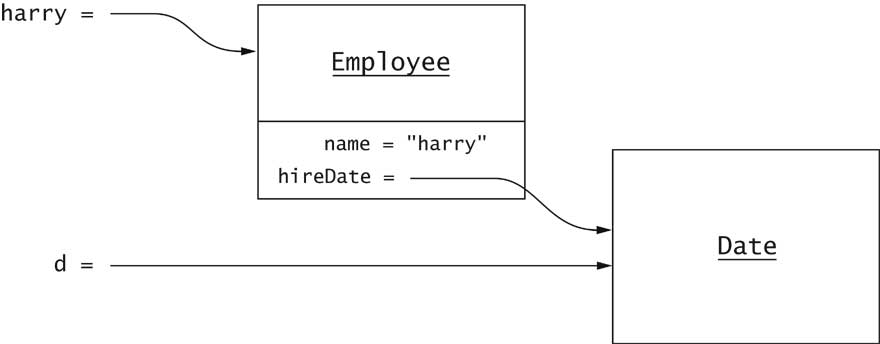
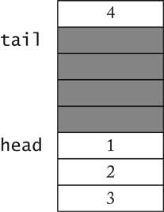

Object-Oriented Design & Patterns
Cay S. Horstmann
Chapitre 3
Conseils pour la conception de classe

Matière du chapitre
- La classe Date de la bibliothèque Java
- Concevoir une classe Day
- Trois implémentations de la classe Day
- L'importance de l'encapsulation
- Analyser la qualité d'une interface
- Programmation par contrat
- Test unitaire
La classe Date de la bibliothèque standard
Méthodes de la classe Date
| boolean after(Date other) |
Test si la date est après une date donnée |
| boolean before(Date other) |
Test si la date est avant une date donnée |
| int compareTo(Date other) |
Détermine quelle date vient avant l'autre |
| long getTime() |
Retourne le nombre de millisecondes écoulées
depuis l'« époque » (1970-01-01 00:00:00 GMT) |
| void setTime(long n) |
Établit la date à un nombre de millisecondes écoulées
depuis l'« époque » |
Méthodes de la classe Date
- Les méthodes dépréciées sont omises
- Les méthodes de la classe Date fournissent un ordre total sur
les objets Date
- Convertir vers une mesure de temps scalaire
- Notez que before/after ne sont pas absolument nécessaires (probablement
ils sont là pour faciliter des choses)
Les points dans le temps

La classe GregorianCalendar
- La classe Date ne tient pas compte des mois, des jours de la semaine,
etc.
- C'est le travail d'un calendrier
- Un calendrier assigne un nom à un point dans le temps
- Plusieurs calendriers sont utilisés :
- Grégorien
- Contemporain : Hébreux, Arabe, Chinois
- Historique : Révolution française, Maya
Traitement d'une date dans la bibliothèque Java

Concevoir une classe Day
- Classe personnalisée, pour les fins pédagogiques
- Utiliser les classes de la bibliothèque standard, au lieu de cette
classe, dans vos propres programmes
- Day encapsule un jour dans un endroit fixe
- Pas d'heure, pas de fuseau horaire
- Utiliser le calendrier Grégorien
Concevoir la classe Day
- Répondre aux questions comme
- Combien de jours pour arriver à la fin de l'année ?
- Dans 100 jours, quel jour sera-t-il ?
Concevoir la classe Day

(faire le lien entre les jours d'un calendrier et un nombre de jours)
Concevoir la classe Day
- daysFrom calcule le nombre de jours entre deux jours :
int n = today.daysFrom(birthday);
- addDays calcule le jour étant un nombre de jours du jour donné
:
Day later = today.addDays(999);
- Relation mathématique :
d.addDays(n).daysFrom(d) == n
d1.addDays(d2.daysFrom(d1)) == d2
- Plus claire quand c'est écrit avec des "opérateurs surchargés":
(d + n) - d == n
d1 + (d2 - d1) == d2
- Constructeur : Date(int year, int month, int date)
- Les accesseurs : getYear, getMonth, getDate
Implémenter la classe Day
Implémenter la classe Day
Deuxième implémentation
- Pour une meilleure efficacité, utiliser les numéros de jour
julien
- Utilisé en astronomie
- Nombre de jours depuis le 1 janvier 4713 av. J.-C.
- le 23 mai 1968 = jour julien 2,440,000
- Simplifie énormément l'arithmétique sur les dates
- Ch3/code/day2/Day.java
Troisième implémentation
- Maintenant le constructeur et les accesseurs sont inefficaces
- Le meilleur des deux mondes : calculer au besoin les valeurs des
jours julien ou de a/m/j
- Ch3/code/day3/Day.java
- Quelle implémentation est la meilleure ?
L'importance de l'encapsulation
- Même les classes simples peuvent bénéficier de différentes
implémentations
- Les usagers ne connaissent pas l'implémentation
- Les variables d'instance publiques auraient limité les améliorations
possibles
- Impossible d'utiliser un éditeur de texte pour tout remplacer
d.year
avec
d.getYear()
- Comment faire avec
d.year++ ?
- d = new Day(d.getDay(), d.getMonth(), d.getYear() + 1)
- C'est vraiment inefficace dans la représentation julienne
- Ne pas utiliser les attributs publics, même pour les classes simples
Accesseurs et mutateurs
- Mutateur : change l'état de l'objet
- Accesseur : lit l'état de l'objet sans le modifier
- La classe Day n'a pas de mutateur !
- Les classes sans mutateur sont immuables
- String est immuable
- Date et GregorianCalendar sont muables
Ne pas fournir un mutateur pour chaque accesseur
- Day a les accesseurs getYear, getMonth, getDate
- Day n'as pas les mutateurs setYear, setMonth, setDate
- Ces mutateurs ne fonctionneraient pas bien
- Exemple:
Day deadline = new Day(2001, 1, 31);
deadline.setMonth(2); // ERROR
deadline.setDate(28);
- Peut-être devrions-nous appeler setDate en premier ?
Day deadline = new Day(2001, 2, 28);
deadline.setDate(31); // ERROR
deadline.setMonth(3);
- GregorianCalendar a une implémentation confuse du rollover.
- Donne silencieusement un résultat erroné plutôt qu'une erreur.
- Immuabilité est utile
Partager les références muables
Partager les références muables
Partager les références muables

Variables d'instance définies comme final
- Bonne idée de définir les variables d'instance immuables comme final
private final int day;
- une référence d'objet marquée final peut encore référer à un
objet muable
private final ArrayList elements;
- elements ne peut pas référer à une autre liste
- Le contenu de la liste peut changer
Séparer les accesseurs et les mutateurs
Séparer les accesseurs et les mutateurs
Effets secondaires
- Effets secondaires d'une méthode : tout changement d'état observable
- Mutateur : change le paramètre implicite
- Autres effets secondaires : changements à
- un paramètre explicite
- un objet statique
- Éviter ces effets secondaires -- ils induisent les usagers dans l'erreur
- Bon exemple, pas d'effet secondaire au-delà du paramètre implicite
a.addAll(b)
mue a mais pas b
Effets secondaires
- Formater une date (de base) :
SimpleDateFormat formatter = . . .;
String dateString = "January 11, 2012";
Date d = formatter.parse(dateString);
- Avancé :
FieldPosition position = . . .;
Date d = formatter.parse(dateString, position);
- Effet secondaire : met à jour le paramètre position
- La conception pourrait être meilleure : ajouter position à l'état de formatter
Effets secondaires
Loi de Déméter
- Exemple : Système de boîte vocale dans le chapitre 2
Mailbox currentMailbox = mailSystem.findMailbox(...);
- Ne respecte pas l'encapsulation
- Supposons qu'une version future de MailSystem utilise une base
de données
- Alors il n'a plus les objets MailBox
- Arrive souvent dans les gros systèmes
- Karl Lieberherr : Loi de Déméter
- Déméter = la déesse grec de l'agriculture, sœur
de Zeus
Loi de Déméter
- La loi : une méthode devrait utiliser seulement les objets qui sont
- des variables d'instance de la classe
- des paramètres
- des objets qu'elle construit avec new
- Ne devrait pas utiliser un objet provenant d'un appel de méthode
- Remède dans le système de boîte vocale : déléguer
les méthodes pour la
MailBox au système
de boîte vocal
mailSystem.getCurrentMessage(int mailboxNumber);
mailSystem.addMessage(int mailboxNumber, Message msg);
. . .
- Méthode empirique, pas une loi mathématique
Qualité de l'interface d'une classe
- Clients : programmeurs utilisant la classe
- Critères :
- Cohésion
- Complétude
- Convenance
- Clarté
- Cohérence
- Activité d'ingénieur : faire des compromis
Cohésion
Complétude
Convenance
Clarté
- Les programmeurs confus écriront du code erroné
- Mauvais exemple : Supprimer un élément d'une LinkedList
- Rappel : la classe standard
LinkedList
LinkedList countries = new LinkedList();
countries.add("A");
countries.add("B");
countries.add("C");
- Itérer sur une liste :
ListIterator iterator = countries.listIterator();
while (iterator.hasNext())
System.out.println(iterator.next());
Clarté
Cohérence
Cohérence
- Mauvais exemple : classe String
s.equals(t) / s.equalsIgnoreCase(t)
- Mais
boolean regionMatches(int toffset,
String other, int ooffset, int len)
boolean regionMatches(boolean ignoreCase, int toffset,
String other, int ooffset, int len)
- Pourquoi pas regionMatchesIgnoreCase?
- Problème très fréquent dans le code des étudiants
Programmation par contrat
- Spécifier les responsabilités
- de celui qui appelle
- de celui qui implémente
- Augmente la fiabilité
- Augmente la l'efficacité
Pré-conditions
- L'appelant tente de supprimer un message d'une MessageQueue vide
- Que devrait-il arriver ?
- MessageQueue peut déclarer cela comme une erreur
- MessageQueue peut tolérer l'appel et retourner une valeur factice
- Qu'est-ce qui est mieux ?
Pré-conditions
- La vérification excessive des erreurs est coûteuse
- Retourner une valeur factice peut compliquer les tests
- Le contrat métaphore
- Le fournisseur de service doit spécifier les pré-conditions
- Si les pré-conditions sont respectées, le fournisseur de service doit
travailler correctement
- Autrement, le fournisseur de service peut faire n'importe quoi
- Quand les pré-conditions ne sont pas respectées, fournisseur de service
peut
- lever une exception
- retourner une fausse réponse
- corrompre la donnée
Pré-conditions
/**
Remove message at head
@return the message at the head
@precondition size() > 0
*/
Message remove()
{
return elements.remove(0);
}
- Qu'est-ce qui arrive si les pré-conditions ne sont pas respectées ?
- IndexOutOfBoundsException
- Une autre implémentation peut avoir un comportement différent
Implémentation circulaire d'un tableau
- Implémentation efficace d'une file bornée
- Éviter le déplacement inefficace des éléments
- Circulaire : l'index de queue pointe sur la tête
- Ch3/queue/MessageQueue.java
Déplacement inefficace des éléments

Un tableau circulaire

Wrapping around the End

Pré-conditions
- Dans l'implémentation d'un tabelau circulaire, si la pré-condition pour la
suppression échoue, la file est corrompue !
- Une file bornée a besion d'une pré-condition pour add
- Approche naïve :
@precondition size() < elements.length
- La pré-condition devrait être vérifiable par l'appelant
- Meilleur :
@precondition size() < getCapacity()
Assertions
Assertions
public Message remove()
{
assert count > 0 : "violated precondition size() > 0";
Message r = elements[head];
. . .
}
Exceptions dans le contrat
/**
. . .
@throws NoSuchElementException if queue is empty
*/
public Message remove()
{
if (count == 0)
throw new NoSuchElementException();
Message r = elements[head];
. . .
}
- L'exception levée fait partie du contrat
- L'appelant peut se fier au comportement
- L'exception levée ne résulte pas de la violation d'une pré-condition
- Cette méthode n'a pas de pré-condition
Post-conditions
Invariants de classe
- Condition qui est
- vraie après chaque constructeur
- préservée par chaque méthode
(si c'est vrai avant l'appel, c'est encore vrai après)
- Utile pour vérifier la validité des opérations
Invariants de classe
Test unitaire
- Test unitaire = test d'une seule classe
- Concevoir les cas de test pendant l'implémentation
- Exécuter les tests après chaque changement d'implémentation
- Lorsque vous trouvez une erreur, ajoutez un cas de test qui détecte l'erreur
JUnit

JUnit
- Le nom de la classe test = le nom de la classe testée + test
- Les méthodes de test commencent par test
import junit.framework.*;
public class DayTest extends TestCase
{
public void testAdd() { ... }
public void testDaysBetween() { ... }
. . .
}
JUnit
- Chaque cas de test se termine pas une assertion
- L'environnement de test détecte les assertions qui échouent
public void testAdd()
{
Day d1 = new Day(1970, 1, 1);
int n = 1000;
Day d2 = d1.addDays(n);
assertTrue(d2.daysFrom(d1) == n);
}